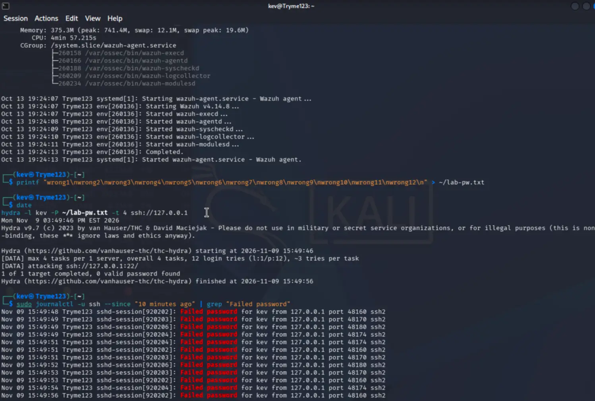
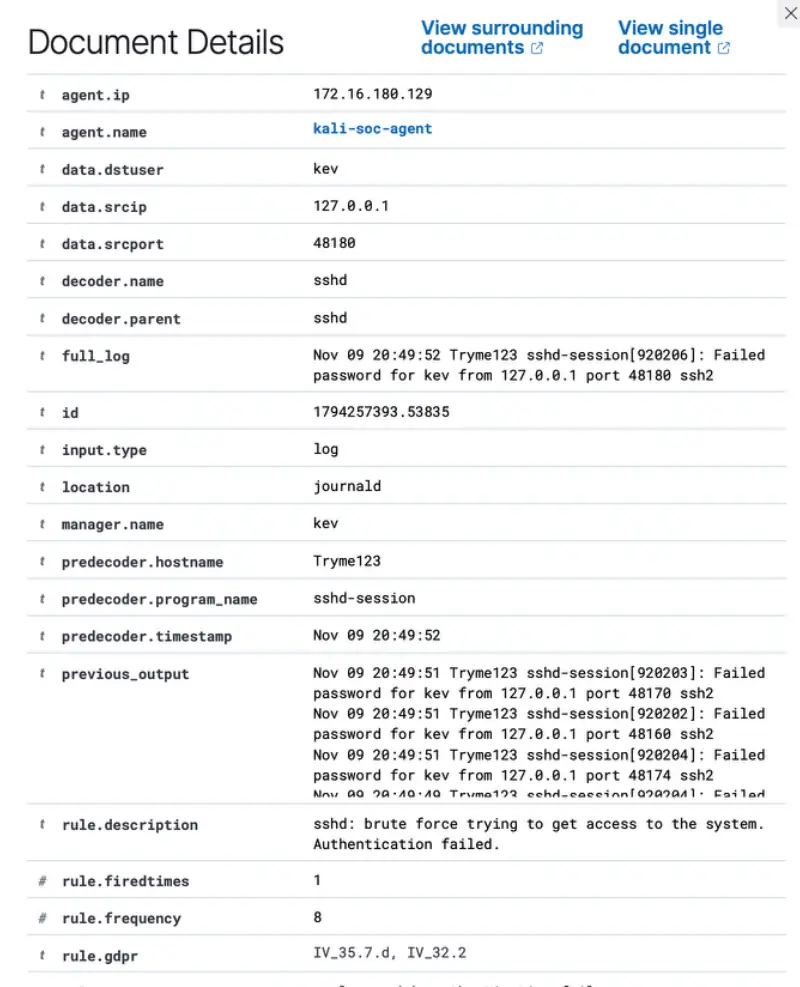
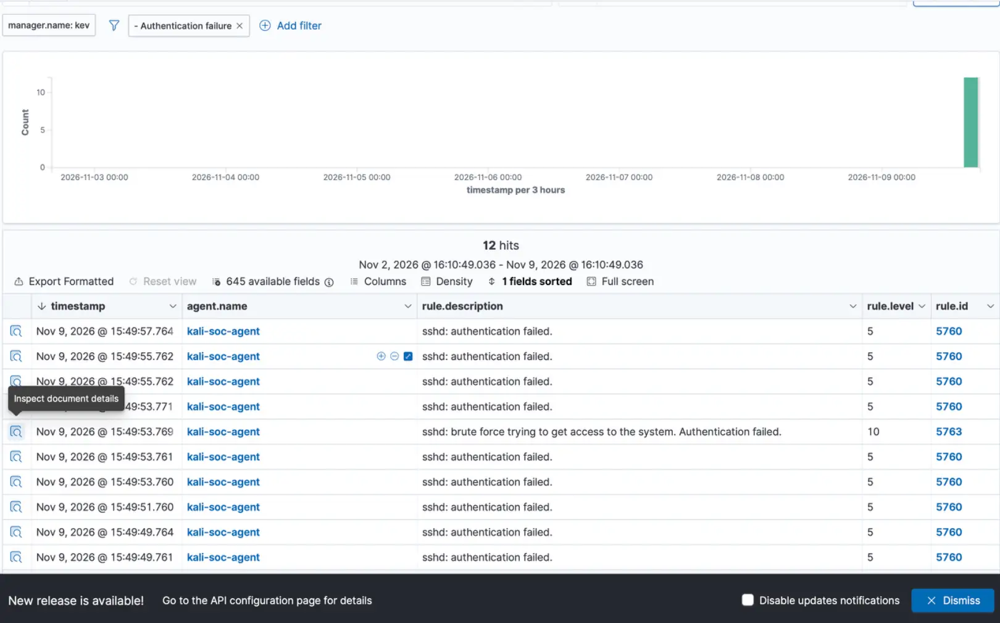

Wazuh SOC Monitoring & Threat Detection Lab
A hands-on investigation into Linux security monitoring, failed SSH logins, repeated password attempts and file integrity events.
1. Project overview
I built a two-VM monitoring lab to practice how a security analyst collects and investigates endpoint alerts. The Ubuntu Server VM hosted the Wazuh manager and dashboard. A Kali Linux VM ran the Wazuh agent (kali-soc-agent) and provided SSH logs for analysis.
My initial tests confirmed that a deliberately incorrect SSH password appeared in Wazuh and that changes to a monitored test file produced file integrity events. I then ran additional controlled SSH tests to verify detection beyond a single failed login.
2. What I tested
- Initial SSH test: entered an incorrect password and found the corresponding authentication failure in the local journal and Wazuh.
- Repeated SSH test: ran twelve deliberately wrong password candidates against the Kali VM's own loopback SSH service using Hydra. Hydra reported zero valid passwords.
- Log comparison: reviewed
journalctl -u sshand compared the failed-password messages with Wazuh Threat Hunting events. - File integrity monitoring: modified a designated lab test file and confirmed a file-change event with changed hashes.
3. Results
| Observation | Evidence |
|---|---|
| Monitored endpoint | kali-soc-agent |
| SSH failure detection | Rule 5760, level 5 |
| Repeated attempt detection | Rule 5763, level 10 (brute-force behavior) |
| Filtered event count | 12 Wazuh hits in the November 9 view |
| Test outcome | No valid password found; no successful compromise demonstrated |
The second test helped confirm that the same lab setup could detect repeated failures and produce a higher-severity brute-force alert, rather than only reporting an individual bad password.
4. Screenshot evidence
These are my original lab screenshots, cropped only to exclude unrelated browser tabs and desktop areas. The terminal text, log messages, Wazuh rules and alert values have not been recreated.



5. What I learned
I learned how to move from an alert to its supporting source log, check that event details match, and distinguish one failed login from repeated authentication attempts. I also practiced documenting the outcome without overstating what happened: these were deliberately generated lab events, not evidence of an external attacker.
Scope: All password tests targeted my own Kali VM using 127.0.0.1. No valid credentials were found, and the observed activity does not establish a successful intrusion.
6. Related documentation
Detailed lab notes · SSH investigation report · File integrity investigation